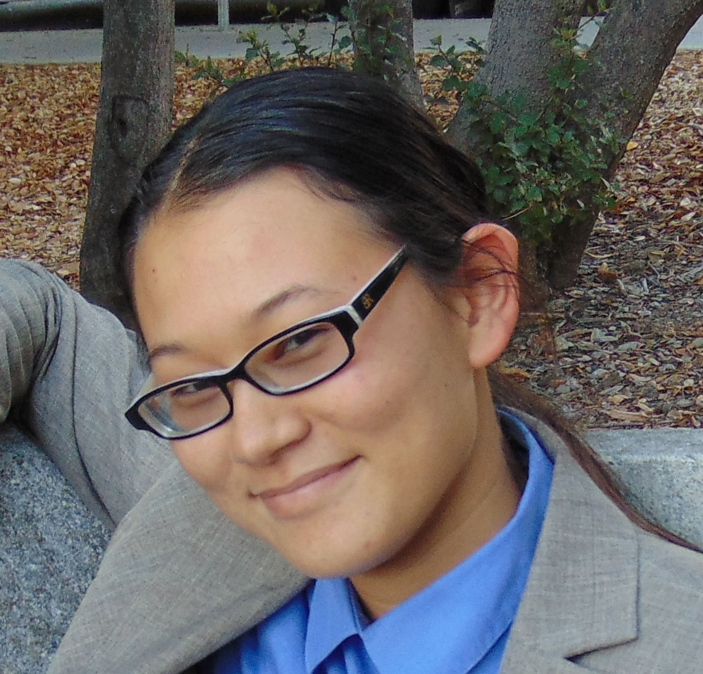

|  |
|
About me
I am a space systems engineer working at Blue Origin on mission-crew interfaces for the MK-2 crewed Lunar lander. In May 2024 I graduated with a PhD from the Robust Robotics Group at MIT, advised by Nick Roy and supported by a NSF Graduate Fellowship. My doctoral minor was in Space Sysems Engineering, and I completed a master's degree in Bill Freeman's group.
I am generally interested in human and robot vision, autonomous navigation, and the robotic and electrical systems that will help humans explore space. I enjoy problem-oriented engineering design, and like to play with both hard- and soft- ware, with more recent emphasis being on software and AI/ML-based computer vision models.
In the past I made electronics for Venus probes, built telescopes, defined concepts and requirements for Lunar payloads, and designed sensors that helped keep rocket engines from exploding. I hold a PhD/SM EECS/doctoral minor Space Systems Engineering from MIT, and a BS EECS/BA Physics from UC Berkeley.
Publications
| 2024 | |
|
PhD Thesis: Human-Inspired Methods for Extending Advances in Computer Vision to Data- and Compute-Constrained Environments
Massachusetts Institute of Technology |
|
|
FeatUp: A Model-Agnostic Framework for Features at Any Resolution
with Stephanie Fu and Mark Hamilton (primaries), Axel Feldmann, Zhoutong Zhang, and Bill Freeman. International Conference on Learning Representations (ICLR), 2024 [Poster] Website. Preprint. Code. Demo. Colab. News feature |

| 2023 |
|
Fusion for Reducing Domain Specificity in Computer Vision Models
with Nick Roy. March Meeting of the American Physical Society, 2023 [Oral] Abstract |
| 2022 | |
|
One Visualization is Worth 1000 Words: Toward Automated Data Recovery and Interpretation from Past 3D Visualizations
with Bill Freeman. March Meeting of the American Physical Society, 2022 [Oral] Abstract. Dataset |
|
The Importance of Experimental Controls: Evidence that
Task-Dependent Invariances Define Functional Specialization in Cortical
Hierarchy
March Meeting of the American Physical Society, 2022 [Poster] Abstract |
| 2021 | |
|
SM Thesis: Shape from Surface Contours via Artificial Neural Nets
Massachusetts Institute of Technology Thesis. Dataset |
|
|
Toward Automatic Interpretation of 3D Plots
with Bill Freeman. International Conference on Document Analysis and Recognition (ICDAR), 2021 [Poster] Preprint. Paper. Dataset |
| 2019 |
|
Graphene as a Diffusion Barrier in High-Temperature Electronics
with Ananth Yalamarthy, Peter Satterthwaite, Sam Vaziri, Savannah Benbrook, Eric Pop, and Debbie Senesky. March Meeting of the American Physical Society, 2019 [Oral] Abstract |
| 2018 |
|
Variability Study for Low-Voltage Micro-Electro-Mechanical Relay Operation
with Benjamin Osoba (primary), Bivas Saha, Sergio Almeida, Jatin Patil, Maurice Roots, Edgar Acosta, Junqiao Wu, and Tsu-Jae King Liu. IEEE Transactions on Electron Devices Paper |
Project Highlights
Lunar Ascent CameraMission Systems and Integration Intern, Lunar Transportation (Blue Origin, Su 2023)
Mentors: Dr. Alex Miller and Tim Lloyd
Rocket Engine Health Monitoring System
DreamChaser Propulsion Intern (Sierra Space, Su 2017)
Mentors: Scott Munson and J. Arthur 'Chip' Sauer
Clock Timing Interface
South Pole Telescope collaboration (UC Berkeley, Su 2016)
Mentors: Nicholas Huang and Nathan Whitehorn
CubeSat Deployment System
InterEgr 160: Engineering Design (UW Madison, Sp 2013)
Mentors: Scott Munson and J. Arthur 'Chip' Sauer of Orbital Technologies (now part of Sierra Space)
Datasets
SurfaceGrid: (Almost) a million images for learning shape from surface contours: [LINK]from Toward Automatic Interpretation of 3D Plots (2021)
Teaching
Electromagnetics (6.630), MITGrader. Professors: Qing Hu, Jelena Notaros
Fa 2020, Fa 2022, Fa 2023
Electromagnetic Waves and Applications (6.013), MIT
Teaching Assistant. Professors: Luca Daniel, Kevin O'Brien
Sp 2022
Quantum Measurement and Control (6.644), MIT
Grader. Professor: Kevin O'Brien
Fa 2021
Signals, Systems, and Inference (6.011), MIT
Grader. Professors: George Verghese, Peter Hagelstein
Sp 2021
L.R. Ingersoll Physics Museum, UW Madison
Museum Docent. Supervisor: Steve Narf
Su 2014 - Sp 2015
Intro to Electrical Engineering (ECE 210), UW Madison
Lab Assistant. Professor: Giri Venkataramanan
Fa 2013 - Sp 2015
Undergraduate Mentees
Xinyun (Sunshine) Jiang (Fa 2023-present) with Sid Ancha -- Uncertainty estimation for diffusion models.
Louisa Wood (Su 2022-Sp 2023) with Sandra Liu — Better GelSight sensors using artificial neural networks.
Stephanie Fu (Fa 2021-Sp 2023) with Mark Hamilton — Feature upsampling. Work published at ICLR 2024.
Howard Beck (Su 2022) — Priming neural depth estimators with rough disparity predictions.